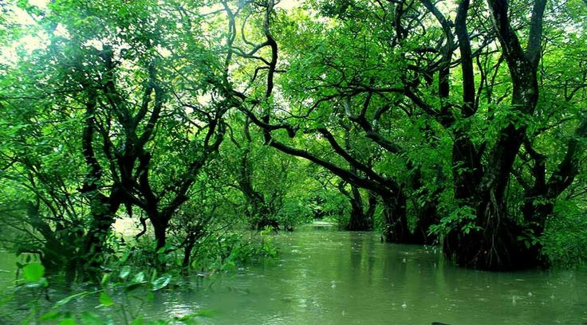

Sylhet
Sylhet is a major city and division located in the northeastern part of Bangladesh, near the borders of the Indian states of Assam, Meghalaya, and Tripura. It is widely known for its natural beauty, featuring vast tea gardens, green hills, forests, and numerous rivers such as the Surma and Kushiyara. The region receives heavy rainfall, especially during the monsoon season, which keeps the landscape lush and vibrant throughout the year.
Natural Beauty
Sylhet is renowned for its breathtaking natural beauty, with lush green tea gardens, rolling hills, dense forests, and crystal-clear rivers creating a peaceful landscape. Frequent rainfall keeps the region fresh and vibrant
Some tourist places:
- Jaflong
- Lalakhal
- Baichanakandi
- Ratargul
- Srimongal
Jaflong
Jaflong is one of the most popular tourist spots in Sylhet.
It is famous for its stone collection area and flowing rivers.
The place is surrounded by green hills and tea gardens.
Visitors enjoy the natural scenery and fresh air here.
Jaflong looks especially beautiful during the rainy season.

Lalakhal
Lalakhal is well known for its clear blue-green river.
The water color changes with the sunlight, creating a stunning view.
Hills and forests surround the river on both sides.
Boat rides are very popular among tourists here.
It is a peaceful place for nature lovers.

Bichanakandi
Bichnakandi is a famous tourist destination in Sylhet.
It is located at the border of Bangladesh and India.
The area is filled with stones, hills, and flowing streams.
It becomes more attractive during the monsoon season.
Many tourists visit Bichnakandi to enjoy its natural beauty.

Ratargul
Ratargul is the only swamp forest in Bangladesh.
It remains underwater during the rainy season.
Visitors explore the forest by boat at that time.
The forest is rich in plants and wildlife.
Ratargul offers a unique and calm natural experience.

Srimongal
Srimongal is known as the tea capital of Bangladesh.
It has large tea gardens and green landscapes.
The climate of Srimongal is cool and pleasant.
Many people visit to enjoy nature and fresh air.
It is also famous for its peaceful environment.

Economy of Sylhet
Sylhet’s economy is largely driven by the tea industry, agriculture, and remittances from expatriates living abroad, especially in the United Kingdom. The region is one of the main tea-producing areas of Bangladesh, contributing significantly to national production. Remittance income plays a vital role in improving local living standards and supporting business growth, making Sylhet an important economic hub in the country.
In conclusion, Sylhet is a unique and important region of Bangladesh, known for its natural beauty, cultural heritage, and strong economic contribution. With its scenic landscapes, rich traditions, and growing economy supported by tea production and remittances, Sylhet continues to play a significant role in the country’s overall development.